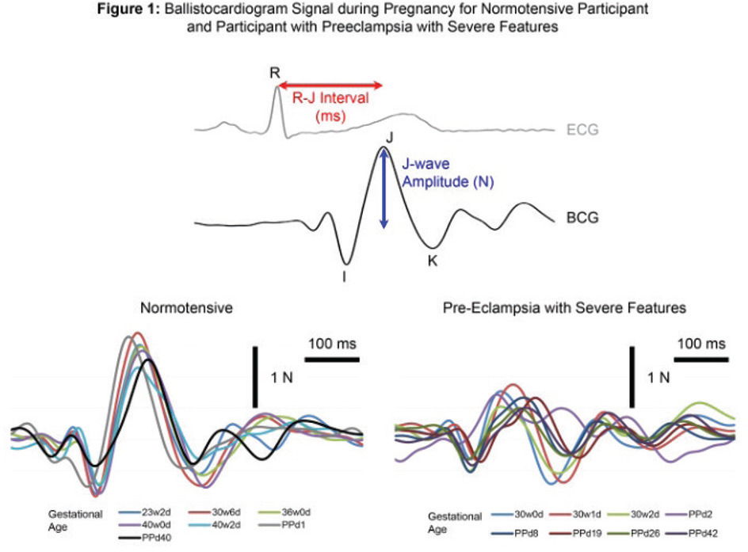
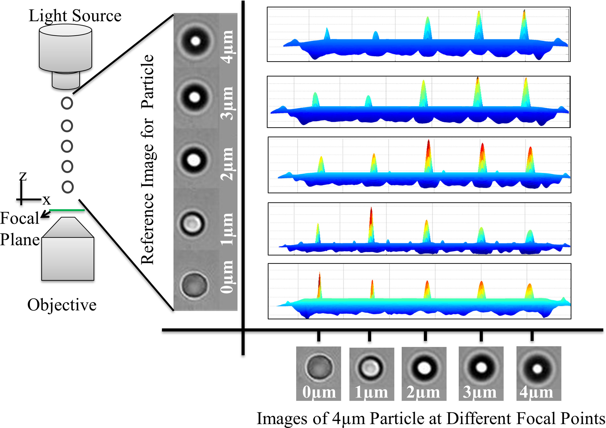

|
News
- 09/2017: I released a PyTorch implementation of Clickhere CNN and Render For CNN .
(code)
- 06/2017: I gave a talk at the 37th Soar workshop on my current research project.
(slides)
- 06/2016: I gave a talk at the 36th Soar workshop on the block design task project.
(slides)
- 07/2016: I presented a poster at CogSci 2016. (paper)
|
|
Research
I am interested in the problems that lie at the intersection of computer vision and cognitive science.
I am currently working on tackling the following question,
can an agent use its reasoning and interaction capabilities to improve its perception?
I am approaching this question by exploring possible integrations between convolutional neural networks and the Soar cognitive architecture.
|
|

|
A Pilot Study of a Modified Bathroom Scale to Monitor Cardiovascular Hemodynamic in Pregnancy
Odayme Quesada,
Mohamed El Banani,
James Heller,
Shire Beach,
Mozziyar Etemadi,
Shuvo Roy,
Omer Inan,
Juan Gonzalez,
Liviu Klein
Journal of the American College of Cardiology, 2016
We showed that the ballistocardiogram (BCG) signal - the heart beat induced repetitive movements of the
body due to acceleration of blood as it is ejected into the large vessels - can be measured using a modified bathroom scale.
We used the scale to acquire serial measurements of BCG waveforms during pregnancy to assess maternal cardiovascular adaptation
, including changes in cardiac output (CO), cardiac contractility (CC) and heart rate (HR).
|
|

|
Three-Dimensional Particle Tracking in Microfluidic Channel Flow using In and Out of Focus Diffraction
Bushra Tasadduq,
Gonghao Wang,
Mohamed El Banani,
Wenbin Mao,
Wilbur Lam,
Alexander Alexeev,
Todd Sulchek
Journal of Flow Measurement and Instrumentation, 2015
Three-dimensional particle tracking is important to accurately understand the motion of particles within complex flow fields.
We show that three-dimensional trajectories of particles within microfluidic flow can be extracted from two-dimensional bright
field video microscopy. The method utilizes the defocusing that occurs as particles move out of the objective focal plane when
viewed through a high numerical aperture objective lens.
|
|